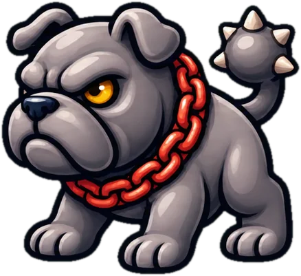

Tap a stage to read its story.
A stocky little pup with iron-grey fur and a chunky flat face, Bullpup wears a red spiked collar that jingles softly as it trots. Its paws are oversized for its body, and it carries its wide head low, sniffing every shadow for hidden dangers. In Ghost Hollow it is said Bullpup was once a guardian spirit's watchdog - it still circles whatever it loves three times before settling, as though guarding an invisible perimeter.
Field note: Bullpup circles any new friend three times before sitting - an old guard-spirit habit it never outgrew.
Ghost Hollow. Bullpup and its family are found in the Ghost Hollow. See everyone who lives there.
Share a Bond Food that matches its types to become friends. Bullpup loves:
A Bond Food is not a trick. It joins your spirit with the Kimuro's spirit, and only when it chooses you.
Print the Kimuro adventure packs: mazes, cards, a board game and Bond Mark medals.
See the printable packs